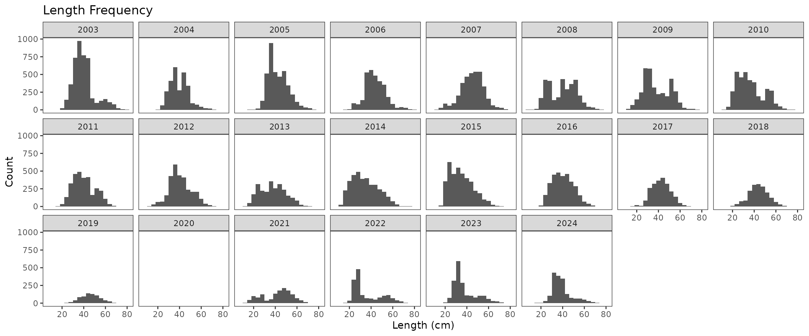
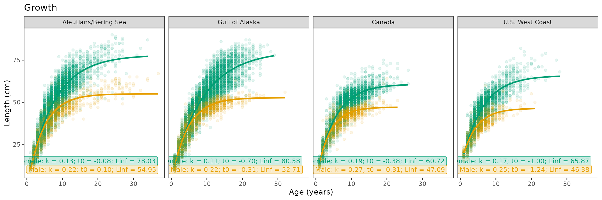
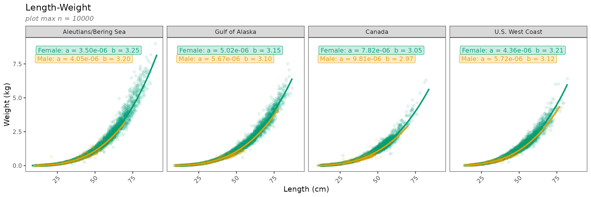

Plotting biology
a2_plotting_biology.RmdFor these plots we will need biological data stored in three data
frames in the fishyplots package which we can combine with
bind_rows from dplyr.
data("nwfsc_bio")
data("afsc_bio")
data("pbs_bio")
all_data <- bind_rows(afsc_bio, nwfsc_bio, pbs_bio)These functions take in any number of subregions (default all regions) and one lowercase species common or scientific name. Note that not all species occur in all regions, and “no data” messages or plots will be displayed. If multiple regions are selected, plots will be faceted by region by default.
unique(all_data$survey)
#> [1] "AK GULF" "AK BSAI" "NWFSC" "PBS"
head(unique(all_data$common_name))
#> [1] "atka mackerel" "pacific ocean perch" "southern rock sole"
#> [4] "northern rockfish" "flathead sole" "shortraker rockfish"Once you have chosen your desired region(s) and species, you can call
the functions. Many biological plotting functions have a few main
arguments to input data, subregions, and
species to be plotted. If available, by_sex
will differentiate data by sex if not done already. Since some species
have limited biological data, some of the facets may display a “no data”
message. If you wish to drop these subplots with missing data, set
facet_all to FALSE.
Age Frequency
In order to manage the right skew caused by older groundfish, ages
are binned at a certain age percentile. The argument cutoff
can be used to specify the age percentile at which the graph will start
binning (it is automatically set at 0.95). You may also choose to set
by_sex to TRUE if you want to differentiate by sex.
age_frequency(data = all_data,
subregions = c("PBS", "NWFSC", "AK BSAI", "AK GULF"),
species = "arrowtooth flounder")
Length Frequency
The following function generates a length frequency plot. If you want
to instead see a histogram of lengths by year you may choose to set the
time_series argument to FALSE (although in doing so you
must subset all_data to the desired regions before calling the
function).
length_frequency(data = all_data,
subregions = c("PBS", "NWFSC", "AK BSAI", "AK GULF"),
species = "arrowtooth flounder")
length_frequency(data = nwfsc_bio,
subregions = "NWFSC",
species = "arrowtooth flounder",
time_series = FALSE)
#> Warning: Removed 1 row containing non-finite outside the scale range
#> (`stat_bin()`).
Average Length
We also have a function that provides mean length over time differentiated by sex.
length_ts(data = all_data,
subregions = c("PBS", "NWFSC", "AK BSAI", "AK GULF"),
species = "arrowtooth flounder")
Age - Depth
The next function plots both a histogram and heatmap for the
age-depth relationship. Sex differentiation with by_sex
works best when just looking at one region, although looking at this
across all regions is also an option.
plot_age_depth(data = all_data,
subregion = c("AK BSAI", "AK GULF", "PBS", "NWFSC"),
species = "arrowtooth flounder")
plot_age_depth(data = all_data,
subregion = "NWFSC",
species = "arrowtooth flounder",
by_sex = TRUE)Length - Depth
You can make the same types of graphs for the length-depth
relationship as well. Again, the by_sex argument can be
specified here.
plot_length_depth(data = all_data,
subregions = "NWFSC",
species = "sablefish")Growth
To make growth plots, this function internally uses prediction data
formulated from the von Bertalanffy function that is stored in the
fishyplots package.
data(vb_predictions)The function takes in the biological data, the desired region(s), and
1 species. The argument facet_all will automatically
include all subregions regardless of missing data, but can be turned off
when set to FALSE.
plot_growth(data = all_data,
subregions = c("AK BSAI", "AK GULF", "NWFSC", "PBS"),
species = "arrowtooth flounder")
Length - Weight
Finally, we can also plot the length-weight relationship. Similat to
the growth function, this function internally uses log-log regression
prediction data from the fishyplots package.
data(lw_predictions)The argument subset defaults TRUE to plot a random
subset of 10000 points per region for quicker plotting speed. To see all
available data points, set as FALSE.
length_weight(data = all_data,
species = "arrowtooth flounder",
subset = TRUE)
#> Note: Plotting a random n = 10000 subset of arrowtooth flounder. Model values not impacted.